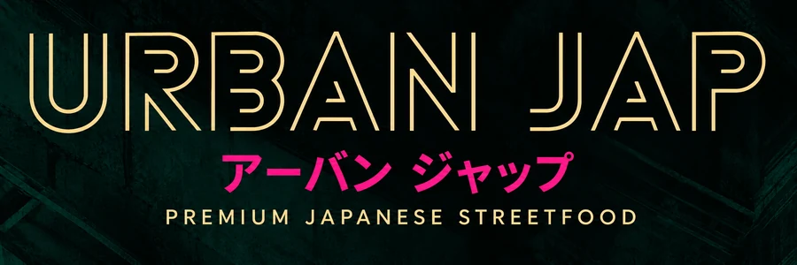
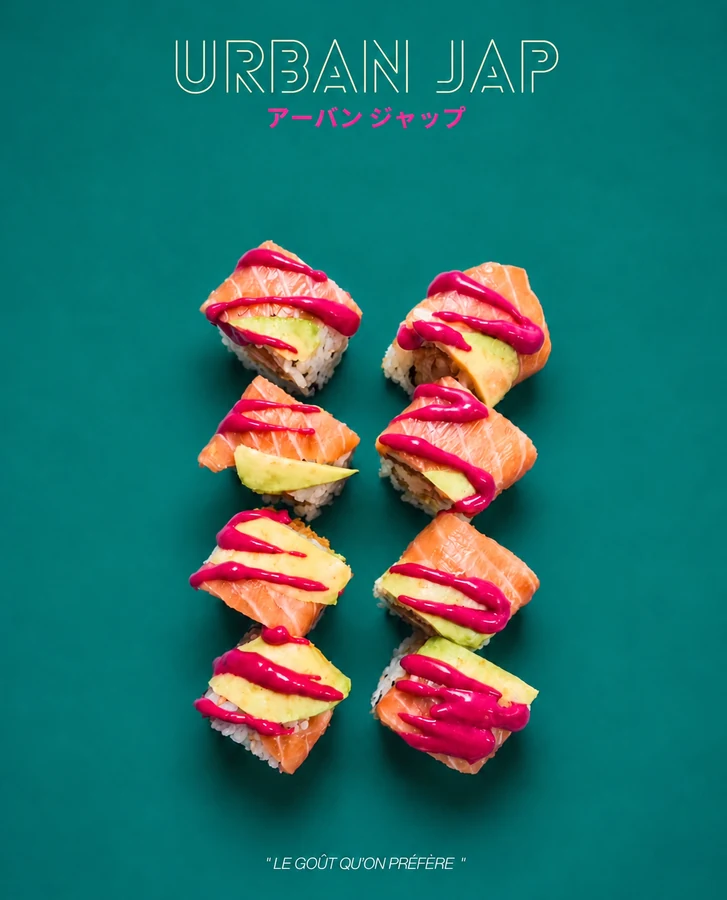

Restauration

Restauration sur place par Urban Jap.
Menu et détails bientôt disponibles.

Urban Jap sur Instagram ↗
Restauration sur place par Urban Jap.
Menu et détails bientôt disponibles.

Urban Jap sur Instagram ↗